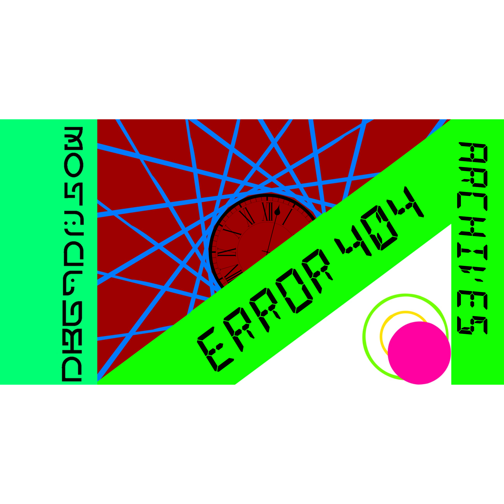

404 Not Found

お探しのページ（ファイル）はアーカイブ内に存在しないか、
パスが変更されている可能性があります。
ここは過去のバージョンを保存するアーカイブサイトです。
最新の情報をお探しの場合は公式サイトをご覧ください。

お探しのページ（ファイル）はアーカイブ内に存在しないか、
パスが変更されている可能性があります。
ここは過去のバージョンを保存するアーカイブサイトです。
最新の情報をお探しの場合は公式サイトをご覧ください。